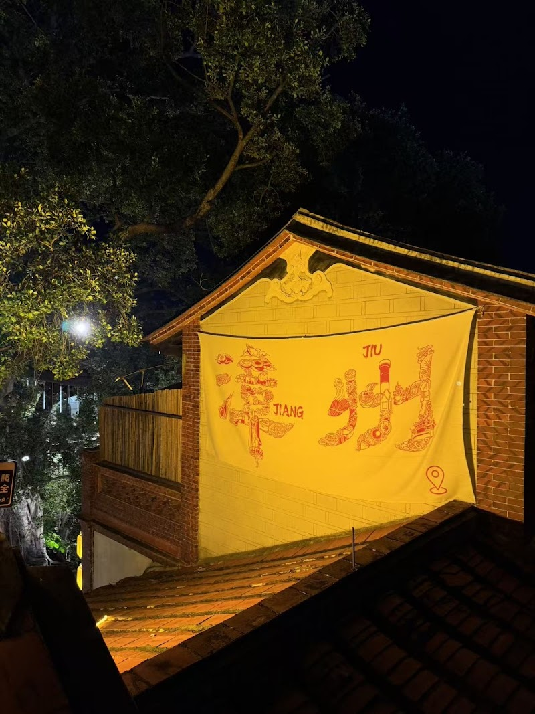
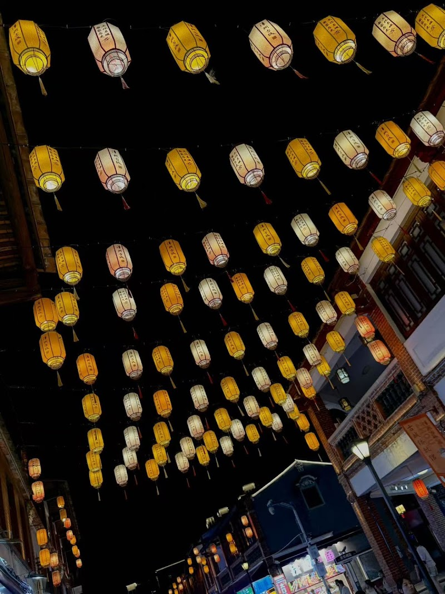

Alley of Gold
- 연도2025
- 장소중국 푸젠성 장저우
- 도구스마트폰
- 내용밤 골목의 금빛 등불
사진 소개낮의 골목은 그냥 지나가는 길이지만, 밤이 되면 사람들이 모여 사는 자리가 됩니다. 등불이 길을 밝히는 게 아니라 길이 사람을 기다리는 것처럼 보였습니다. 하루가 끝난 뒤에 남는 온도에 대한 사진입니다.
중국 푸젠성 · 2025 · 사진 3점
골목의 등불과 오래된 창. 해가 진 뒤에 다시 찾아가 찍은 세 장입니다.

사진 소개낮의 골목은 그냥 지나가는 길이지만, 밤이 되면 사람들이 모여 사는 자리가 됩니다. 등불이 길을 밝히는 게 아니라 길이 사람을 기다리는 것처럼 보였습니다. 하루가 끝난 뒤에 남는 온도에 대한 사진입니다.

사진 소개창에 붙은 글자는 밖을 향한 작은 소망입니다. 집 안의 사람이 매일 그 글자를 보며 하루를 시작했을 거라는 생각이 들었습니다. 같은 마음을 오래 반복하는 일이 결국 삶이라고, 이 창은 조용히 말하고 있습니다.

사진 소개처마에 걸린 등불은 밤이 깊어질수록 더 또렷해집니다. 주변이 어두워질수록 무엇이 남는지 보여주는 장면입니다. 화려한 것들이 사라진 자리에 남은 불빛은, 그날 그 골목이 지키고 있던 것들입니다.